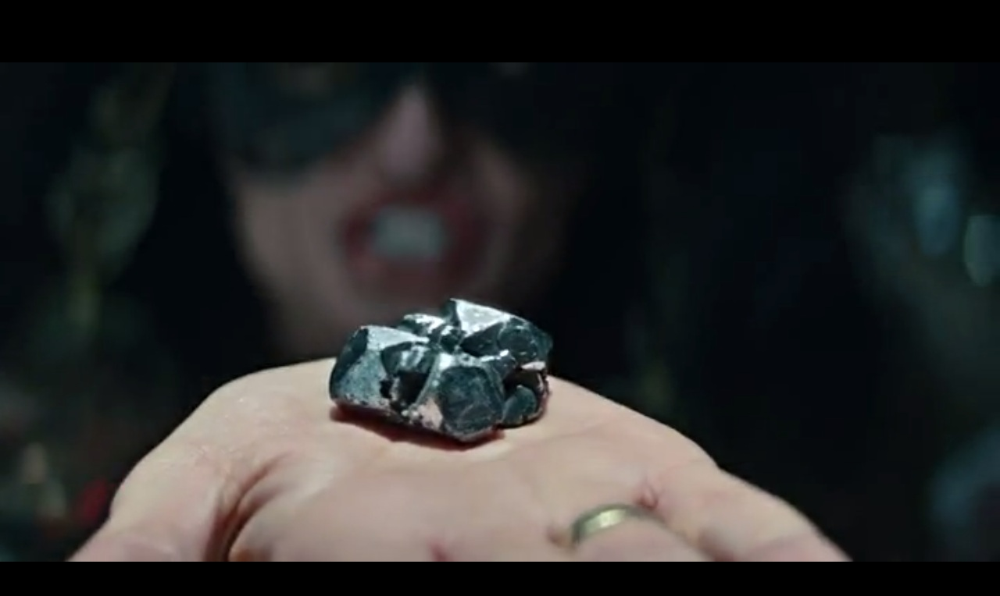

Stargate Origins
Muy bien. Entonces iré a por un café y un donut, me sentaré y esperaré a que llegue el big bang.
Stargate, que significa Puerta a las Estrellas o Puerta Estelar, es una franquicia de ciencia ficción nacida en 1994 de la mano de Dean Devlin y Roland Emmerich con Stargate, Puerta a las Estrellas. Está compuesta de la novela Stargate de Dean Devlin y su versión cinematográfica adaptada y llevada a la gran pantalla en 1994 por Roland Emmerich y otras novelas, tres series de televisión (Stargate SG-1 , Stargate Atlantis y Stargate Universe) y una serie de dibujos animados (Stargate Infinity), 14 años mas tarde se recrea la saga con Stargate Origins
Stargate Origins cuenta la historia de la joven Catherine Langford, nieta del arqueólogo que descubrió la primera Stargate SG-1. Langford comienza una nueva aventura inesperada con el objetivo de conocer el misterio de la Puerta Estelar y así poder salvar la Tierra de la oscuridad. Mark Ilvedson y Justin Michael Terry son los creadores de esta serie que cuenta con 10 episodios en su primera temporada.
| Elemento | Primera Aparición | Necesidades |
|---|---|---|
|
Puerta Interestelar
|
0:05:27 | El ser humano lleva casi desde sus comienzos buscando resolver dos grandes desafíos, el contacto extraterrestre y el viaje interestelar, con esta puerta se lograrían ambas cosas, por lo que se necesita de ella para resolver la principal trama de la historia. |
| Bastón de energía | 0:08:47 | Al visitarse una civilización superior con la capacidad de realizar viajes interestelares se espera que su capacidad militar y de defensa sea superior, estos bastones que disparan energía se usan con dicho fin. |
| Bastón Curativo  | 0:04:12 | Es otro gran reto buscado por la ciencia, reducir la curación a lo absurdo, simplemente tocando con un bastón el cuerpo del herido, se utiliza para sanar las heridas de arma blanca que sufre uno de los protagonistas. |
| Piedra naqada | 0:06:12 | Un misterioso material capaz de transmitir la energía y la vida. Este material es el usado en ambos bastones con el fin de proporcionarles poder. |
Hasta el presente año de producción 2018, no se han inventado tecnologías capaces de imitar la funcionalidad de la puerta interestelar, aunque si son numerosas las investigaciones sobre agujeros negros como portales interestelares así también como las investigaciones con las colisiones de hadrones, que se creen que son capaces de abrir dichas puertas. Esto es solo una teoría y tardara muchos años en desarrollarse.
También está presente el bastón curativo y la piedra de naqada, que hasta el momento es pura ficción.
La única tecnología similar a las citadas anteriormente, serian el colisionado de hadrones que se queda muy lejos de la funcionalidad de la puerta.
El bastón de energía, sin embargo, sí que se podría comparar con algunas armas electromagnéticas o láseres disponibles en la actualidad
Al ser una serie basada en otra más antigua 1994, en su época tuvo algo de repercusión en base a los viajes interestelares usando los llamados agujeros de gusano, acerco esta teoría a las personas que sin ningún conocimiento podía hacerles entender abstractamente el funcionamiento del universo.
1. Wikipedia, Datos película:
https://en.wikipedia.org/wiki/Stargate_Origins
2. Fueradeseries, repercusión mediática
https://fueradeseries.com/stargate-origins
3. Wikipedia, Viajes interestelares
"https://es.wikipedia.org/wiki/Viaje_interestelar